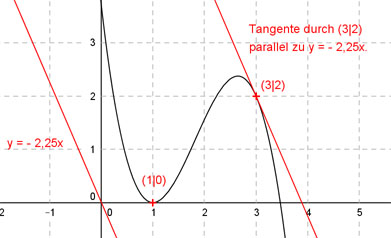

Aufgabe 70 Der Graph einer ganzrationalen Funktion 3. Grades berührt an der Stelle x = 1 die x-Achse und hat im Punkt (3|2) eine Tangente parallel zur Geraden y = -2,25x. Wie lautet seine Funktionsgleichung?  Allgemeine Form einer ganzrationalen Funktion 3. Grades: f(x) = ax3 + bx2 + cx + d f’(x) = 3ax2 + 2bx + c f’’(x) = 6ax + 2b 4 Bedingungen: 1. Berührt an der Stelle x = 1 die x-Achse bedeutet zum einen: f(1) = 0 --> a * 13 + b * 12 + c * 1 + d = 0 --> a + b + c + d = 0 I 2. Berührt an der Stelle x = 1 die x-Achse bedeutet zum anderen: f’(1) = 0 --> 3a * 12 + 2b * 1 + c = 0 --> 3a + 2b + c = 0 II 3. Hat im Punkt (3|2) bedeutet: f(3) = 2 --> a * 33 + b * 32 + c * 3 + d = 2 --> 27a + 9 b + 3c + d = 2 III 4. Hat im Punkt (3|) eine Tangente parallel zu y = -2,25x bedeutet: f’(3) = - 2,25 --> 3a * 32 + 2b * 3 + c = -2,25 --> 27a + 6b + c = -2,25 IV I * (-1) + III -a - b - c - d = 0 27a + 9b + 3c + d = 2 ---------------------- 26a + 8b + 2c = 2 V IV * (-2) + V -54a - 12b - 2c = 4,5 26a + 8b + 2c = 2 ---------------------- -28a - 4b = 6,5 VI II * (-1) + IV -3a - 2b - c = 0 27a + 6b + c = -2,25 --------------------- 24a + 4b = -2,25 VII VI + VII -28a - 4b = 6,5 24a + 4b = -2,25 ----------------- -4a = 4,25 |:(-4) a = -1,0625 a = -1,0625 in VII eingesetzt: 24 * (-1,0625) + 4b = -2,25 -25,5 + 4b = -2,25 |+25,5 4b = 23,25 |:4 b = 5,8125 a = - 1,0625 und b = 5,8125 in IV eingesetzt: 27 * (-1,0625) + 6 * 5,8125 + c = -2,25 -28,6875 + 34,875 + c = -2,25 6,1875 + c = -2,25 |-6,1875 c = -8,4375 a = -1,0625 und b = 5,8125 und c = -8,4375 in I eingesetzt: -1,0625 + 5,8125 - 8,4375 + d = 0 -3,6875 + d = 0 |+3,6875 d = 3,6875 Gesuchte Funktionsgleichung: f(x) = -1,0625x3 + 5,8125x2 - 8,4375x + 3,6875